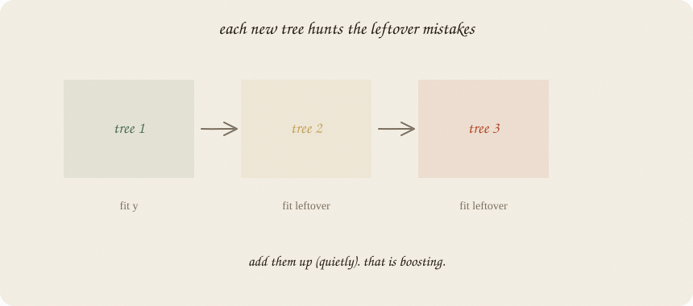
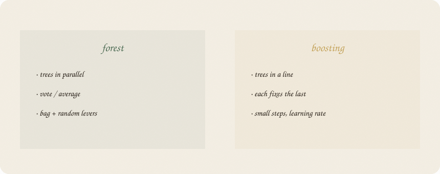
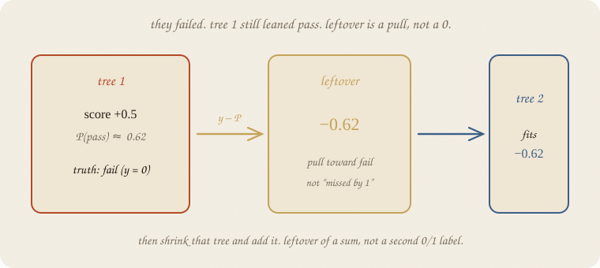
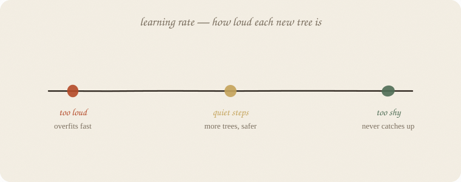

datazines · a sketchbook

Read 01 decision tree and 02 random forest first. Same exam. Forest: many trees in parallel, then a vote. Boosting: many trees in sequence, each fixing what the last still got wrong.
XGBoost / LightGBM / CatBoost are fast, taxed versions of this idea. The religion is here. The brand names are engines. Dialects in one page: 04 boosting flavors.
Flip it like a notebook. One page = one idea. Done.
Forest: disagreement by bagging and muted levers. Vote.
Boosting: no vote at the start. Tree 1 fits y (pass/fail, or a score). Look at who is still wrong — the leftover. Tree 2 fits that leftover. Tree 3 fits the leftover of 1+2. Add them up.

| forest | boosting | |
|---|---|---|
| trees | parallel | a chain |
| each tree sees | a bag of y | the current leftover |
| combine | vote / average | sum (small steps) |
| randomness | the point | optional extra |
Same bricks (shallow trees). Different glue.
You have met leftovers: y − ŷ on the grade line.
Pass/fail is the same verb, not “tree 2 refits 0 or 1.” Tree 1 puts out a score. Squash to P(pass). Leftover = y − P. People call that the gradient of the loss. Hence the name.
They failed (y = 0). Tree 1 still said score +0.5 → P ≈ 0.62. Leftover = 0 − 0.62 = −0.62. Tree 2 fits that pull toward fail — not a second binary label.

Then shrink that tree before adding it. If you add it at full volume, tree 2 memorizes the noise of tree 1’s leftover. That is overfit, only faster.

Learning rate (ν, sklearn learning_rate): how much of each new tree you actually add.
| too loud (≈ 1) | quiet (0.05–0.1) | too shy |
|---|---|---|
| few trees, overfits fast | more trees, safer | never catches up |
Rule of thumb: smaller rate, more trees. You buy the same fit in smaller bites. Ridge energy: a tax on drama, paid in steps.
Depth of each tree is usually small (stumps or depth 2–3). The chain supplies the complexity, not one deep monster.
House seed 7. The forest lifted test from 0.71 → 0.79. Boosting on this tiny exam is easy to spoil:
| model | knobs | train | test |
|---|---|---|---|
| deep tree | depth 8 | 1.000 | 0.708 |
| forest | 100 trees | 1.000 | 0.792 |
| boosting | rate 0.1, 30 trees, depth 2 | 0.964 | 0.750 |
| boosting | rate 1.0, 30 trees | 1.000 | 0.750 |
| boosting | rate 0.1, 80 trees | 1.000 | 0.708 |
| boosting | rate 0.05, 40 trees, depth 3 | 1.000 | 0.667 |
Quiet + short chain: a bit better than the deep tree, not better than the forest, on 24 test people. Longer chain: train perfect, test back to 0.71 — memorized again. Deeper bricks + quieter rate is not a free swap: test 0.667. Same class, worse.
That is the lesson, not a scandal. Boosting shines on bigger tables. On this toy exam the choir is enough. Importances still hours-first (~0.83), then sleep, tutor whisper.
If you later open XGBoost: same leftover-chain + extra taxes (shrinkage, column samples, regularizers). Different engine, same religion.
learning_rate).If you keep only one thing:
forest votes. boosting adds leftover-trees, quietly.
Same pass/fail class as the forest notebook — eighty students, house seed 7. GradientBoostingClassifier is the plain sklearn chain (not XGBoost). Depth 2 trees.
import numpy as np
from sklearn.model_selection import train_test_split
from sklearn.ensemble import GradientBoostingClassifier, RandomForestClassifier
from sklearn.tree import DecisionTreeClassifier
rng = np.random.default_rng(7)
n = 80
hours = rng.uniform(1, 6, n)
sleep = rng.uniform(4, 9, n)
tutor = (rng.random(n) > 0.6).astype(float)
z = -3.2 + 1.05 * hours + 0.25 * (sleep - 6.5) + 0.7 * tutor
passed = (rng.random(n) < 1 / (1 + np.exp(-z))).astype(int)
X = np.column_stack([hours, sleep, tutor])
names = ["hours", "sleep", "tutor"]
Xtr, Xte, ytr, yte = train_test_split(X, passed, test_size=0.3, random_state=0)
deep = DecisionTreeClassifier(max_depth=8, random_state=7).fit(Xtr, ytr)
rf = RandomForestClassifier(n_estimators=100, random_state=7).fit(Xtr, ytr)
gb = GradientBoostingClassifier(
n_estimators=30, learning_rate=0.1, max_depth=2, random_state=7
).fit(Xtr, ytr)
print("deep ", round(deep.score(Xtr, ytr), 3), round(deep.score(Xte, yte), 3))
print("forest ", round(rf.score(Xtr, ytr), 3), round(rf.score(Xte, yte), 3))
print("boost ", round(gb.score(Xtr, ytr), 3), round(gb.score(Xte, yte), 3))
print("importances", dict(zip(names, gb.feature_importances_.round(3))))
deep 1.0 0.708
forest 1.0 0.792
boost 0.964 0.75
importances {'hours': 0.831, 'sleep': 0.15, 'tutor': 0.019}
On this small test set the forest wins. That does not mean boosting is weaker. It means 56 trainers + a chain is easy to spoil. Boosting is the chain you will want when n grows and you are willing to tune rate × trees. The printout is the honesty, not a demo that boosting always beats the choir.
n_estimators = length of the chain. learning_rate = how loud each new tree is. max_depth=2 keeps each brick small.
| word | meaning |
|---|---|
| leftover / gradient | y − P (pass/fail), not a second 0/1 label |
| chain | tree k fits the leftover of 1…k−1 |
| learning rate | shrink each tree before adding |
| n_estimators | how many leftover-trees |
| XGBoost etc. | engines for this religion |
Reach for it when tables with mixes, leftover errors that a forest already almost got; you will tune rate and depth; you outgrew one default forest.
Skip it when you need an answer tonight with no knobs (02 random forest); tiny n and a loud rate (you will memorize); a line or logistic already fits.
Pays you: often the strongest tabular model once n is real. Fine leftover-hunting. Same bricks as the tree notebook.
Costs you: knobs. Easy to overfit. Harder to read than one tree. On 80 fake students the forest was enough — believe the test set, not the brand.
The chain. Forest was the choir: 02 random forest. AdaBoost vs XGBoost vs this, in one page: 04 boosting flavors.
Flip it like a notebook. One page = one idea.